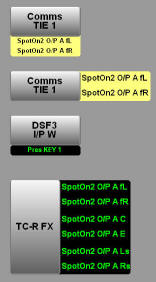

Audio Destination Component
Description
This is a custom take component to router mono,
stereo or surround (5.1) audio.
The image below shows 4 possible presentations for this
control - though the exact layout is determined by the UI
file loaded:

Tallies are shown as either normal state or mixed
depending upon certain business rules defined elsewhere.
There are three possible modes for tally - single line
for mono destinations, two line for stereo, 6 line for 5.1
and single line/double height for certain stereo routes.
Note: This control works with global destination
numbers. The instance (and lock instance) supplied defined
the base infodriver number from which the appropriate device
number is calculated. In practice this is an easy
calculation
device = base_device + ( global_dest / 4096 );
destination = global_dest % 4096
This control is optimised for use with UI "connections".
Commands
| Name |
Type |
Use |
| instance |
mandatory |
Instance of the device to take router
source names
from
The destination device is calculated by offset
from this number (see above) |
| lock_instance |
optional |
The instance of the device to get lock
information from. If it isn't supplied then the
take button is always enabled with valid source/dest/take
mode |
| global_dest=<dest_index> |
mandatory |
The destination index
e.g.
global_dest=57382 |
| take.<global_dest_index>.<mask>=<source_index> |
runtime |
when the take button is pressed
<dest_index> is optional and checked if present
or ignored if not supplied
<mask> is "how" to make the route for the given
indices
<source_index> is the source number
e.g.
take.57381.M-M=12345 |
| undo |
|
when the undo button is pressed |
| panel |
mandatory |
name of the ".bncs_ui" file to load (note
that only the name is required - the ".bncs_ui"
bit is not needed and should not be provided |
| initially_selected |
optional |
if true the dest button is created selected
and the dest event is sent |
| selected=<global_dest_index> |
runtime |
Incoming notification of dest button
selection changed. If the dest index matches
ours then we'll show ourselves as selected.
Otherwise we'll show ourselves as deselected.
This is to allow for multiple dest controls
working as a group. |
| default |
runtime |
Routes the default sources |
| defaultSourceList |
optional |
Comma delimited source list - this must
contain exactly the right number of sources for
the dest type (1 for mono, 2 for stereo and 6
for surround) |
| poll_GRD |
mandatory |
Accepts either "true" or "false", "false"
by default, it defines whether the component
will make its routes by sending router crosspoints
(if set to "true") or sending info writes
(if set to "false"). |
Notifications
| Name |
Use |
| global_dest=<global_dest_index> |
notification this button has been selected
and the current destination |
Stylesheets
| Name |
Use |
| dest_selected |
Shown on the dest pre-select tally when the
destination is set |
| dest_deselected |
When the destination is not set |
| groupbox |
background to the control |
| tally_audio_normal |
shown on the tallies if it's been determined
this is in "normal" state |
| tally_audio_mixed |
shown on the tallies if it's been determined
this is in "mixed" state |
Developers Notes
There are two sets of tally components - 2 x single
height, and 1 double height. Both are written to but which
is shown is determined by source/dest type and defined
business rules.
|